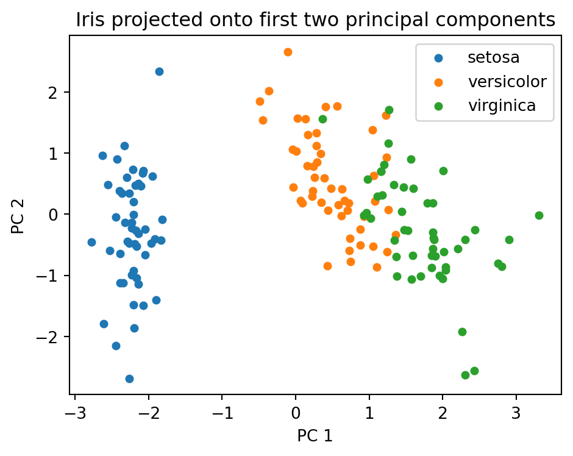

High dimensional data is the rule rather than the exception in modern machine learning. Images, gene expression panels, text embeddings, and sensor logs routinely live in spaces with hundreds or thousands of coordinates. Yet the intrinsic structure that matters for a task often occupies a far smaller subspace. Principal Component Analysis (PCA) is the canonical linear tool for finding that subspace. It is more than a hundred years old, it is still the first thing most practitioners reach for when they want to compress, visualize, denoise, or decorrelate data, and it sits underneath a surprising number of more elaborate methods. This chapter develops PCA from two complementary first principles, connects it to the singular value decomposition, and then treats the practical questions that decide whether PCA helps or hurts: how many components to keep, when to whiten, when to go nonlinear with kernels, and where the method breaks down.
72.1 1. Setup and Notation
We are given \(n\) observations \(\mathbf{x}_1, \dots, \mathbf{x}_n \in \mathbb{R}^d\), stacked as rows of a data matrix \(\mathbf{X} \in \mathbb{R}^{n \times d}\). PCA almost always begins with centering. Let \(\boldsymbol{\mu} = \frac{1}{n}\sum_{i=1}^n \mathbf{x}_i\) be the sample mean, and replace each observation by \(\mathbf{x}_i - \boldsymbol{\mu}\) so that the centered matrix has columns that sum to zero. Centering matters because PCA models directions of variation about the mean, not the location of the mean itself. Skipping it folds the offset of the data cloud from the origin into the first component and corrupts the result.
The object PCA acts on is the sample covariance matrix
where \(\mathbf{X}\) is now centered. The matrix \(\mathbf{C}\) is symmetric and positive semidefinite, so it has an orthonormal eigenbasis with nonnegative eigenvalues. Those eigenvectors and eigenvalues are the entire content of PCA. The use of \(n-1\) rather than \(n\) gives an unbiased variance estimate, but it only rescales eigenvalues uniformly and never changes the directions or their ordering.
A goal we will keep returning to is to find a \(k\) dimensional linear subspace, with \(k \ll d\), such that projecting the data onto it loses as little information as possible. The two views below make “as little as possible” precise in two different ways and then prove they agree.
72.2 2. The Variance Maximization View
72.2.1 2.1 The First Component
Suppose we want a single direction, a unit vector \(\mathbf{w} \in \mathbb{R}^d\) with \(\|\mathbf{w}\| = 1\), onto which we project the data. The projection of \(\mathbf{x}_i\) is the scalar \(\mathbf{w}^\top \mathbf{x}_i\). Because the data are centered, these projected values have zero mean, and their sample variance is
This is a Rayleigh quotient maximization. Forming the Lagrangian \(\mathcal{L}(\mathbf{w}, \lambda) = \mathbf{w}^\top \mathbf{C}\,\mathbf{w} - \lambda(\mathbf{w}^\top \mathbf{w} - 1)\) and setting the gradient to zero gives \(\mathbf{C}\,\mathbf{w} = \lambda \mathbf{w}\). So the stationary points are exactly the eigenvectors of \(\mathbf{C}\), and the value of the objective at an eigenvector is its eigenvalue, since \(\mathbf{w}^\top \mathbf{C}\,\mathbf{w} = \lambda \mathbf{w}^\top \mathbf{w} = \lambda\). The maximizer is therefore the eigenvector with the largest eigenvalue \(\lambda_1\), and that eigenvalue is the variance captured along \(\mathbf{w}_1\).
72.2.2 2.2 Subsequent Components
The second component is defined the same way but constrained to be orthogonal to the first, the third orthogonal to the first two, and so on. The constrained optimization yields the eigenvector with the next largest eigenvalue. Ordering the eigenpairs as \(\lambda_1 \ge \lambda_2 \ge \cdots \ge \lambda_d \ge 0\) with orthonormal eigenvectors \(\mathbf{w}_1, \dots, \mathbf{w}_d\), the principal components are these eigenvectors, and \(\lambda_j\) is the variance along \(\mathbf{w}_j\). The \(\mathbf{w}_j\) are often called loadings, and the projected coordinates \(z_{ij} = \mathbf{w}_j^\top \mathbf{x}_i\) are called scores.
Because the eigenvectors are orthonormal and the trace of \(\mathbf{C}\) is invariant under orthogonal change of basis, the total variance decomposes cleanly:
PCA thus repartitions the same total variance into a sorted sequence of orthogonal directions. The fraction \(\lambda_j / \sum_l \lambda_l\) is the proportion of variance explained by component \(j\), the quantity that drives most decisions about how many components to keep.
72.3 3. The Reconstruction View
72.3.1 3.1 Best Low Rank Approximation
A second and equally fundamental way to motivate PCA asks for the \(k\) dimensional subspace that reconstructs the data with minimum squared error. Let the subspace be the column space of an orthonormal matrix \(\mathbf{W}_k \in \mathbb{R}^{d \times k}\), so \(\mathbf{W}_k^\top \mathbf{W}_k = \mathbf{I}_k\). The orthogonal projection of \(\mathbf{x}_i\) onto this subspace is \(\mathbf{W}_k \mathbf{W}_k^\top \mathbf{x}_i\). We seek
Minimizing reconstruction error is therefore the same as maximizing the captured variance \(\operatorname{tr}(\mathbf{W}_k^\top \mathbf{C}\,\mathbf{W}_k)\). The maximum over orthonormal \(\mathbf{W}_k\) is achieved by stacking the top \(k\) eigenvectors of \(\mathbf{C}\), and the optimal value is \(\sum_{j=1}^k \lambda_j\). The two views coincide exactly: the variance maximizing subspace is the error minimizing subspace.
72.3.2 3.2 Why This Equivalence Is Useful
The reconstruction view is the one that generalizes. It frames PCA as the best linear autoencoder under squared loss, with \(\mathbf{W}_k^\top\) as the encoder and \(\mathbf{W}_k\) as the decoder. A linear neural autoencoder trained with mean squared error recovers the same subspace that PCA finds, although it need not recover the individual orthonormal axes in order. The reconstruction view also makes the residual error explicit and quantifiable as \(\sum_{j>k} \lambda_j\), which is the basis for denoising and for choosing \(k\).
72.4 4. The SVD Connection
72.4.1 4.1 Computing PCA Without Forming the Covariance
In practice PCA is rarely computed by forming \(\mathbf{C}\) and diagonalizing it. The numerically preferred route is the singular value decomposition of the centered data matrix directly,
where \(\mathbf{U} \in \mathbb{R}^{n \times n}\) and \(\mathbf{V} \in \mathbb{R}^{d \times d}\) are orthogonal and \(\mathbf{\Sigma}\) is diagonal with singular values \(\sigma_1 \ge \sigma_2 \ge \cdots \ge 0\). Substituting,
The right singular vectors in \(\mathbf{V}\) are exactly the principal directions, the columns \(\mathbf{w}_j\), and the eigenvalues relate to singular values by \(\lambda_j = \sigma_j^2 / (n-1)\). The scores are \(\mathbf{X}\mathbf{V} = \mathbf{U}\mathbf{\Sigma}\), so the projected coordinates fall out of the SVD with no extra work.
72.4.2 4.2 Why SVD Is Preferred
Forming \(\mathbf{X}^\top \mathbf{X}\) squares the condition number of the problem, which can destroy precision when the data have a wide spread of scales. The SVD operates on \(\mathbf{X}\) directly and avoids this. The Eckart Young theorem states that the rank \(k\) truncation \(\mathbf{X}_k = \mathbf{U}_k \mathbf{\Sigma}_k \mathbf{V}_k^\top\) is the best rank \(k\) approximation of \(\mathbf{X}\) in both the Frobenius and spectral norms, which is precisely the reconstruction view of Section 3 stated as a matrix factorization theorem. When \(d\) is enormous but \(k\) is small, a truncated or randomized SVD computes only the leading components and never materializes the full decomposition, giving large savings in time and memory.
We can compute PCA directly from the SVD of the centered data and check that the right singular vectors reproduce the loadings, with the projected coordinates falling out as \(\mathbf{U}\mathbf{\Sigma}\). The standardized iris dataset serves as a concrete example, and we cross check the explained variance against scikit-learn.
Code
import numpy as npfrom sklearn.datasets import load_irisfrom sklearn.preprocessing import StandardScalerfrom sklearn.decomposition import PCAiris = load_iris()X = StandardScaler().fit_transform(iris.data)y = iris.target# PCA via SVD on centered dataXc = X - X.mean(axis=0)U, S, Vt = np.linalg.svd(Xc, full_matrices=False)k =2W_k = Vt[:k].T # principal directions (loadings), d x kscores = U[:, :k] * S[:k] # projected coordinates, n x kexplained = S**2/ (S**2).sum()print("Singular values:", np.round(S, 3))print("Explained variance ratio (SVD):", np.round(explained, 3))pca = PCA(n_components=k, random_state=0).fit(X)print("Explained variance ratio (sklearn):", np.round(pca.explained_variance_ratio_, 3))
Singular values: [20.923 11.709 4.692 1.763]
Explained variance ratio (SVD): [0.73 0.229 0.037 0.005]
Explained variance ratio (sklearn): [0.73 0.229]
Projecting the four dimensional iris measurements onto the first two principal components separates the three species well, even though PCA never sees the labels.
Code
import matplotlib.pyplot as pltfig, ax = plt.subplots(figsize=(5, 4))for c in np.unique(y): ax.scatter(scores[y == c, 0], scores[y == c, 1], label=iris.target_names[c], s=18)ax.set_xlabel("PC 1")ax.set_ylabel("PC 2")ax.set_title("Iris projected onto first two principal components")ax.legend()fig.tight_layout()plt.show()

The cumulative explained variance curve guides the choice of how many components to keep. Here two components already exceed 95 percent of the total variance.
Code
pca_full = PCA().fit(X)cum = np.cumsum(pca_full.explained_variance_ratio_)fig, ax = plt.subplots(figsize=(5, 4))ax.plot(np.arange(1, len(cum) +1), cum, marker="o")ax.axhline(0.95, color="gray", linestyle="--", linewidth=1)ax.set_xlabel("Number of components")ax.set_ylabel("Cumulative explained variance")ax.set_title("How many components to keep")ax.set_ylim(0, 1.02)fig.tight_layout()plt.show()print("Cumulative explained variance:", np.round(cum, 3))
The most common heuristic keeps enough components to reach a target cumulative explained variance, often 90, 95, or 99 percent. Define the cumulative ratio
and choose the smallest \(k\) with \(R(k)\) above the threshold. This is interpretable and tied directly to reconstruction error, since \(1 - R(k)\) is the fraction of variance left in the residual. The right threshold depends on the downstream use. Visualization forces \(k\) to two or three regardless of \(R(k)\). Compression for a learned model can tolerate aggressive truncation if the discarded directions carry mostly noise.
72.5.2 5.2 The Scree Plot and the Elbow
Plotting \(\lambda_j\) against \(j\) produces a scree plot that often falls steeply and then flattens. The elbow, the point where the curve bends from a steep drop into a shallow tail, is a classic visual cue for \(k\). The intuition is that the steep part captures structured signal while the flat tail is roughly uniform noise. The elbow is subjective and sometimes absent, so it is best treated as one input among several rather than a rule.
72.5.3 5.3 Principled Alternatives
Several more principled criteria exist. Parallel analysis compares the observed eigenvalues against the distribution of eigenvalues from random data of the same shape and retains only components whose eigenvalue exceeds the random baseline, which guards against keeping noise directions. Probabilistic PCA casts the model in a likelihood framework and lets you select \(k\) by cross validated log likelihood or by an information criterion such as the Bayesian information criterion. For a purely predictive pipeline the cleanest answer is to treat \(k\) as a hyperparameter and tune it by cross validation on the actual downstream metric, since variance explained in the inputs is only a proxy for usefulness in the task.
72.6 6. Whitening
72.6.1 6.1 Definition
Standard PCA decorrelates the data but leaves the components on different scales, since component \(j\) still has variance \(\lambda_j\). Whitening, also called sphering, rescales each component to unit variance. The whitening transform is
after which the transformed data have an identity covariance matrix. Geometrically, whitening turns the ellipsoidal data cloud into a sphere: it removes both the correlation between axes and the difference in spread along them.
72.6.2 6.2 When to Whiten and What It Costs
Whitening helps methods that assume isotropic inputs or that are sensitive to feature scale, including some clustering algorithms and distance based methods, and it is a standard preprocessing step before Independent Component Analysis. The cost is that dividing by \(\sqrt{\lambda_j}\) amplifies the low variance components, which are precisely the directions most contaminated by noise. A tiny \(\lambda_j\) in the denominator can blow up sampling noise into a dominant axis. For this reason whitening is usually applied only to the retained top components, never to the noisy tail, and a small regularizer is often added to the eigenvalues, replacing \(\lambda_j\) with \(\lambda_j + \epsilon\) to keep the rescaling numerically stable.
72.7 7. Kernel PCA
72.7.1 7.1 Motivation and the Kernel Trick
PCA is linear: it can only discover subspaces, so structure that lies on a curved manifold, such as data arranged in concentric rings or a spiral, defeats it. Kernel PCA extends the method to nonlinear structure by performing ordinary PCA in a high dimensional feature space induced by a feature map \(\phi: \mathbb{R}^d \to \mathcal{H}\). The map is never evaluated explicitly. Instead a kernel function supplies inner products in feature space,
with common choices being the radial basis function kernel \(\kappa(\mathbf{x}, \mathbf{y}) = \exp(-\gamma\|\mathbf{x} - \mathbf{y}\|^2)\) and the polynomial kernel \(\kappa(\mathbf{x}, \mathbf{y}) = (\mathbf{x}^\top \mathbf{y} + c)^p\). Because PCA only ever needs inner products, it can be rewritten entirely in terms of \(\kappa\) and never touches \(\phi\) directly.
72.7.2 7.2 Mechanics
Let \(\mathbf{K} \in \mathbb{R}^{n \times n}\) be the kernel matrix with entries \(K_{ij} = \kappa(\mathbf{x}_i, \mathbf{x}_j)\). Since PCA requires centering, and centering must happen in feature space, the kernel matrix is centered with
where \(\mathbf{1}_n\) is the \(n \times n\) matrix with every entry \(1/n\). One then solves the eigenproblem \(\tilde{\mathbf{K}}\,\boldsymbol{\alpha} = n\lambda\,\boldsymbol{\alpha}\). The projection of a point onto principal component \(l\) is a weighted combination of kernel evaluations against the training set, with weights given by the eigenvector \(\boldsymbol{\alpha}_l\) scaled so that the corresponding feature space vector has unit norm.
72.7.3 7.3 Costs and Caveats
Kernel PCA solves an \(n \times n\) eigenproblem rather than a \(d \times d\) one, so its cost scales with the number of samples and becomes expensive for large \(n\), typically cubic in time and quadratic in memory unless approximated. It introduces kernel hyperparameters such as the bandwidth \(\gamma\) that must be tuned and to which results are sensitive. Crucially, there is no simple closed form inverse map from feature space back to input space, so reconstructing a denoised input from its kernel PCA representation requires solving a separate pre image problem. Kernel PCA is powerful for nonlinear feature extraction and for revealing manifold structure, but these costs make it a specialist tool rather than a default.
72.8 8. Practical Use and Limitations
72.8.1 8.1 Preprocessing Decisions
The single most consequential preprocessing choice is whether to standardize features to unit variance before running PCA. PCA on the covariance matrix is not scale invariant: a feature measured in millimeters will dominate the same feature measured in meters purely because its numerical variance is larger. When features are in incommensurable units, such as age in years and income in dollars, standardizing each feature to zero mean and unit variance, which is equivalent to running PCA on the correlation matrix, is almost always the right default. When all features share the same units and scale, such as pixel intensities, covariance PCA can be appropriate and preserves the relative importance of naturally larger axes.
72.8.2 8.2 Common Applications
PCA earns its place across many tasks. It compresses high dimensional inputs into a compact representation that speeds up and regularizes downstream models. It denoises by discarding low variance directions, on the assumption that noise spreads its energy thinly across many minor axes while signal concentrates in a few. It decorrelates features, which helps models that struggle with collinearity. It visualizes data by projecting to two or three components. And it serves as a fast, deterministic baseline against which nonlinear embeddings should be measured before reaching for heavier machinery.
72.8.3 8.3 Limitations
PCA’s assumptions are also its limits. It is linear, so it cannot capture curved manifolds, and on such data it will mix structure across many components or miss it entirely; kernel PCA or methods like t-SNE and UMAP are more appropriate for nonlinear visualization. It is unsupervised and ignores labels, so the high variance directions it selects need not be the directions that separate classes, and a low variance direction can carry all of the discriminative signal; Linear Discriminant Analysis is the supervised counterpart when separation is the goal. PCA is sensitive to outliers because variance is a squared quantity, so a few extreme points can drag a component toward themselves, which motivates robust PCA variants. Its components are linear combinations of all original features and so are often hard to interpret, in contrast to sparse PCA which trades some variance for loadings that touch few features. PCA equates variance with importance, which fails whenever the informative signal is genuinely low variance. Finally, as a transductive batch method in its basic form it needs the data up front, although incremental and online variants relax this for streaming settings.
72.8.4 8.4 A Practical Checklist
In practice a disciplined PCA workflow looks like the following. Center the data, and standardize when units differ. Compute components by SVD rather than by eigendecomposing the covariance matrix. Inspect the explained variance curve and the scree plot together, and pick \(k\) by the downstream metric when one exists rather than by a fixed variance threshold alone. Whiten only when the consuming method benefits from isotropy, and regularize the eigenvalues when you do. Reach for kernel PCA only when there is concrete evidence of nonlinear structure that linear PCA fails to capture, and budget for hyperparameter tuning and the pre image problem when you do. Treated this way, PCA remains one of the most reliable and informative tools in the dimensionality reduction toolkit.
72.9 References
Jolliffe, I. T. and Cadima, J. “Principal component analysis: a review and recent developments.” Philosophical Transactions of the Royal Society A, 2016. https://royalsocietypublishing.org/doi/10.1098/rsta.2015.0202
Shlens, J. “A Tutorial on Principal Component Analysis.” arXiv:1404.1100, 2014. https://arxiv.org/abs/1404.1100
Tipping, M. E. and Bishop, C. M. “Probabilistic Principal Component Analysis.” Journal of the Royal Statistical Society B, 1999. https://www.microsoft.com/en-us/research/publication/probabilistic-principal-component-analysis/
Scholkopf, B., Smola, A., and Muller, K.-R. “Nonlinear Component Analysis as a Kernel Eigenvalue Problem.” Neural Computation, 1998. https://direct.mit.edu/neco/article/10/5/1299/6193
Halko, N., Martinsson, P.-G., and Tropp, J. A. “Finding Structure with Randomness: Probabilistic Algorithms for Constructing Approximate Matrix Decompositions.” SIAM Review, 2011. https://epubs.siam.org/doi/10.1137/090771806
Eckart, C. and Young, G. “The approximation of one matrix by another of lower rank.” Psychometrika, 1936. https://link.springer.com/article/10.1007/BF02288367
Candes, E. J., Li, X., Ma, Y., and Wright, J. “Robust Principal Component Analysis?” Journal of the ACM, 2011. https://dl.acm.org/doi/10.1145/1970392.1970395
Pedregosa, F. et al. “Scikit-learn: Machine Learning in Python.” Journal of Machine Learning Research, 2011. https://jmlr.org/papers/v12/pedregosa11a.html
Source Code
# Dimensionality Reduction with PCAHigh dimensional data is the rule rather than the exception in modern machine learning. Images, gene expression panels, text embeddings, and sensor logs routinely live in spaces with hundreds or thousands of coordinates. Yet the intrinsic structure that matters for a task often occupies a far smaller subspace. Principal Component Analysis (PCA) is the canonical linear tool for finding that subspace. It is more than a hundred years old, it is still the first thing most practitioners reach for when they want to compress, visualize, denoise, or decorrelate data, and it sits underneath a surprising number of more elaborate methods. This chapter develops PCA from two complementary first principles, connects it to the singular value decomposition, and then treats the practical questions that decide whether PCA helps or hurts: how many components to keep, when to whiten, when to go nonlinear with kernels, and where the method breaks down.## 1. Setup and NotationWe are given $n$ observations $\mathbf{x}_1, \dots, \mathbf{x}_n \in \mathbb{R}^d$, stacked as rows of a data matrix $\mathbf{X} \in \mathbb{R}^{n \times d}$. PCA almost always begins with centering. Let $\boldsymbol{\mu} = \frac{1}{n}\sum_{i=1}^n \mathbf{x}_i$ be the sample mean, and replace each observation by $\mathbf{x}_i - \boldsymbol{\mu}$ so that the centered matrix has columns that sum to zero. Centering matters because PCA models directions of variation about the mean, not the location of the mean itself. Skipping it folds the offset of the data cloud from the origin into the first component and corrupts the result.The object PCA acts on is the sample covariance matrix$$\mathbf{C} = \frac{1}{n-1} \mathbf{X}^\top \mathbf{X} \in \mathbb{R}^{d \times d},$$where $\mathbf{X}$ is now centered. The matrix $\mathbf{C}$ is symmetric and positive semidefinite, so it has an orthonormal eigenbasis with nonnegative eigenvalues. Those eigenvectors and eigenvalues are the entire content of PCA. The use of $n-1$ rather than $n$ gives an unbiased variance estimate, but it only rescales eigenvalues uniformly and never changes the directions or their ordering.A goal we will keep returning to is to find a $k$ dimensional linear subspace, with $k \ll d$, such that projecting the data onto it loses as little information as possible. The two views below make "as little as possible" precise in two different ways and then prove they agree.## 2. The Variance Maximization View### 2.1 The First ComponentSuppose we want a single direction, a unit vector $\mathbf{w} \in \mathbb{R}^d$ with $\|\mathbf{w}\| = 1$, onto which we project the data. The projection of $\mathbf{x}_i$ is the scalar $\mathbf{w}^\top \mathbf{x}_i$. Because the data are centered, these projected values have zero mean, and their sample variance is$$\operatorname{Var}(\mathbf{w}^\top \mathbf{x}) = \frac{1}{n-1}\sum_{i=1}^n (\mathbf{w}^\top \mathbf{x}_i)^2 = \mathbf{w}^\top \mathbf{C}\, \mathbf{w}.$$PCA defines the first principal direction as the one that maximizes this spread:$$\mathbf{w}_1 = \arg\max_{\|\mathbf{w}\|=1} \mathbf{w}^\top \mathbf{C}\, \mathbf{w}.$$This is a Rayleigh quotient maximization. Forming the Lagrangian $\mathcal{L}(\mathbf{w}, \lambda) = \mathbf{w}^\top \mathbf{C}\,\mathbf{w} - \lambda(\mathbf{w}^\top \mathbf{w} - 1)$ and setting the gradient to zero gives $\mathbf{C}\,\mathbf{w} = \lambda \mathbf{w}$. So the stationary points are exactly the eigenvectors of $\mathbf{C}$, and the value of the objective at an eigenvector is its eigenvalue, since $\mathbf{w}^\top \mathbf{C}\,\mathbf{w} = \lambda \mathbf{w}^\top \mathbf{w} = \lambda$. The maximizer is therefore the eigenvector with the largest eigenvalue $\lambda_1$, and that eigenvalue is the variance captured along $\mathbf{w}_1$.### 2.2 Subsequent ComponentsThe second component is defined the same way but constrained to be orthogonal to the first, the third orthogonal to the first two, and so on. The constrained optimization yields the eigenvector with the next largest eigenvalue. Ordering the eigenpairs as $\lambda_1 \ge \lambda_2 \ge \cdots \ge \lambda_d \ge 0$ with orthonormal eigenvectors $\mathbf{w}_1, \dots, \mathbf{w}_d$, the principal components are these eigenvectors, and $\lambda_j$ is the variance along $\mathbf{w}_j$. The $\mathbf{w}_j$ are often called loadings, and the projected coordinates $z_{ij} = \mathbf{w}_j^\top \mathbf{x}_i$ are called scores.Because the eigenvectors are orthonormal and the trace of $\mathbf{C}$ is invariant under orthogonal change of basis, the total variance decomposes cleanly:$$\sum_{j=1}^d \lambda_j = \operatorname{tr}(\mathbf{C}) = \sum_{j=1}^d \operatorname{Var}(x_j).$$PCA thus repartitions the same total variance into a sorted sequence of orthogonal directions. The fraction $\lambda_j / \sum_l \lambda_l$ is the proportion of variance explained by component $j$, the quantity that drives most decisions about how many components to keep.## 3. The Reconstruction View### 3.1 Best Low Rank ApproximationA second and equally fundamental way to motivate PCA asks for the $k$ dimensional subspace that reconstructs the data with minimum squared error. Let the subspace be the column space of an orthonormal matrix $\mathbf{W}_k \in \mathbb{R}^{d \times k}$, so $\mathbf{W}_k^\top \mathbf{W}_k = \mathbf{I}_k$. The orthogonal projection of $\mathbf{x}_i$ onto this subspace is $\mathbf{W}_k \mathbf{W}_k^\top \mathbf{x}_i$. We seek$$\min_{\mathbf{W}_k^\top \mathbf{W}_k = \mathbf{I}_k} \; \frac{1}{n}\sum_{i=1}^n \left\| \mathbf{x}_i - \mathbf{W}_k \mathbf{W}_k^\top \mathbf{x}_i \right\|^2.$$Expanding the squared norm and using orthonormality, the reconstruction error equals the total variance minus the variance captured in the subspace:$$\frac{1}{n}\sum_i \|\mathbf{x}_i\|^2 - \operatorname{tr}\!\left( \mathbf{W}_k^\top \mathbf{C}\, \mathbf{W}_k \right) \cdot \frac{n-1}{n}.$$Minimizing reconstruction error is therefore the same as maximizing the captured variance $\operatorname{tr}(\mathbf{W}_k^\top \mathbf{C}\,\mathbf{W}_k)$. The maximum over orthonormal $\mathbf{W}_k$ is achieved by stacking the top $k$ eigenvectors of $\mathbf{C}$, and the optimal value is $\sum_{j=1}^k \lambda_j$. The two views coincide exactly: the variance maximizing subspace is the error minimizing subspace.### 3.2 Why This Equivalence Is UsefulThe reconstruction view is the one that generalizes. It frames PCA as the best linear autoencoder under squared loss, with $\mathbf{W}_k^\top$ as the encoder and $\mathbf{W}_k$ as the decoder. A linear neural autoencoder trained with mean squared error recovers the same subspace that PCA finds, although it need not recover the individual orthonormal axes in order. The reconstruction view also makes the residual error explicit and quantifiable as $\sum_{j>k} \lambda_j$, which is the basis for denoising and for choosing $k$.## 4. The SVD Connection### 4.1 Computing PCA Without Forming the CovarianceIn practice PCA is rarely computed by forming $\mathbf{C}$ and diagonalizing it. The numerically preferred route is the singular value decomposition of the centered data matrix directly,$$\mathbf{X} = \mathbf{U}\,\mathbf{\Sigma}\,\mathbf{V}^\top,$$where $\mathbf{U} \in \mathbb{R}^{n \times n}$ and $\mathbf{V} \in \mathbb{R}^{d \times d}$ are orthogonal and $\mathbf{\Sigma}$ is diagonal with singular values $\sigma_1 \ge \sigma_2 \ge \cdots \ge 0$. Substituting,$$\mathbf{C} = \frac{1}{n-1}\mathbf{X}^\top \mathbf{X} = \frac{1}{n-1}\mathbf{V}\,\mathbf{\Sigma}^\top \mathbf{\Sigma}\,\mathbf{V}^\top.$$The right singular vectors in $\mathbf{V}$ are exactly the principal directions, the columns $\mathbf{w}_j$, and the eigenvalues relate to singular values by $\lambda_j = \sigma_j^2 / (n-1)$. The scores are $\mathbf{X}\mathbf{V} = \mathbf{U}\mathbf{\Sigma}$, so the projected coordinates fall out of the SVD with no extra work.### 4.2 Why SVD Is PreferredForming $\mathbf{X}^\top \mathbf{X}$ squares the condition number of the problem, which can destroy precision when the data have a wide spread of scales. The SVD operates on $\mathbf{X}$ directly and avoids this. The Eckart Young theorem states that the rank $k$ truncation $\mathbf{X}_k = \mathbf{U}_k \mathbf{\Sigma}_k \mathbf{V}_k^\top$ is the best rank $k$ approximation of $\mathbf{X}$ in both the Frobenius and spectral norms, which is precisely the reconstruction view of Section 3 stated as a matrix factorization theorem. When $d$ is enormous but $k$ is small, a truncated or randomized SVD computes only the leading components and never materializes the full decomposition, giving large savings in time and memory.We can compute PCA directly from the SVD of the centered data and check that the right singular vectors reproduce the loadings, with the projected coordinates falling out as $\mathbf{U}\mathbf{\Sigma}$. The standardized iris dataset serves as a concrete example, and we cross check the explained variance against scikit-learn.```{python}import numpy as npfrom sklearn.datasets import load_irisfrom sklearn.preprocessing import StandardScalerfrom sklearn.decomposition import PCAiris = load_iris()X = StandardScaler().fit_transform(iris.data)y = iris.target# PCA via SVD on centered dataXc = X - X.mean(axis=0)U, S, Vt = np.linalg.svd(Xc, full_matrices=False)k =2W_k = Vt[:k].T # principal directions (loadings), d x kscores = U[:, :k] * S[:k] # projected coordinates, n x kexplained = S**2/ (S**2).sum()print("Singular values:", np.round(S, 3))print("Explained variance ratio (SVD):", np.round(explained, 3))pca = PCA(n_components=k, random_state=0).fit(X)print("Explained variance ratio (sklearn):", np.round(pca.explained_variance_ratio_, 3))```Projecting the four dimensional iris measurements onto the first two principal components separates the three species well, even though PCA never sees the labels.```{python}import matplotlib.pyplot as pltfig, ax = plt.subplots(figsize=(5, 4))for c in np.unique(y): ax.scatter(scores[y == c, 0], scores[y == c, 1], label=iris.target_names[c], s=18)ax.set_xlabel("PC 1")ax.set_ylabel("PC 2")ax.set_title("Iris projected onto first two principal components")ax.legend()fig.tight_layout()plt.show()```The cumulative explained variance curve guides the choice of how many components to keep. Here two components already exceed 95 percent of the total variance.```{python}pca_full = PCA().fit(X)cum = np.cumsum(pca_full.explained_variance_ratio_)fig, ax = plt.subplots(figsize=(5, 4))ax.plot(np.arange(1, len(cum) +1), cum, marker="o")ax.axhline(0.95, color="gray", linestyle="--", linewidth=1)ax.set_xlabel("Number of components")ax.set_ylabel("Cumulative explained variance")ax.set_title("How many components to keep")ax.set_ylim(0, 1.02)fig.tight_layout()plt.show()print("Cumulative explained variance:", np.round(cum, 3))```## 5. Choosing the Number of Components### 5.1 Explained Variance CriteriaThe most common heuristic keeps enough components to reach a target cumulative explained variance, often 90, 95, or 99 percent. Define the cumulative ratio$$R(k) = \frac{\sum_{j=1}^k \lambda_j}{\sum_{j=1}^d \lambda_j},$$and choose the smallest $k$ with $R(k)$ above the threshold. This is interpretable and tied directly to reconstruction error, since $1 - R(k)$ is the fraction of variance left in the residual. The right threshold depends on the downstream use. Visualization forces $k$ to two or three regardless of $R(k)$. Compression for a learned model can tolerate aggressive truncation if the discarded directions carry mostly noise.### 5.2 The Scree Plot and the ElbowPlotting $\lambda_j$ against $j$ produces a scree plot that often falls steeply and then flattens. The elbow, the point where the curve bends from a steep drop into a shallow tail, is a classic visual cue for $k$. The intuition is that the steep part captures structured signal while the flat tail is roughly uniform noise. The elbow is subjective and sometimes absent, so it is best treated as one input among several rather than a rule.### 5.3 Principled AlternativesSeveral more principled criteria exist. Parallel analysis compares the observed eigenvalues against the distribution of eigenvalues from random data of the same shape and retains only components whose eigenvalue exceeds the random baseline, which guards against keeping noise directions. Probabilistic PCA casts the model in a likelihood framework and lets you select $k$ by cross validated log likelihood or by an information criterion such as the Bayesian information criterion. For a purely predictive pipeline the cleanest answer is to treat $k$ as a hyperparameter and tune it by cross validation on the actual downstream metric, since variance explained in the inputs is only a proxy for usefulness in the task.## 6. Whitening### 6.1 DefinitionStandard PCA decorrelates the data but leaves the components on different scales, since component $j$ still has variance $\lambda_j$. Whitening, also called sphering, rescales each component to unit variance. The whitening transform is$$\mathbf{z}_i = \mathbf{\Lambda}_k^{-1/2}\, \mathbf{W}_k^\top \mathbf{x}_i,\qquad\mathbf{\Lambda}_k = \operatorname{diag}(\lambda_1, \dots, \lambda_k),$$after which the transformed data have an identity covariance matrix. Geometrically, whitening turns the ellipsoidal data cloud into a sphere: it removes both the correlation between axes and the difference in spread along them.### 6.2 When to Whiten and What It CostsWhitening helps methods that assume isotropic inputs or that are sensitive to feature scale, including some clustering algorithms and distance based methods, and it is a standard preprocessing step before Independent Component Analysis. The cost is that dividing by $\sqrt{\lambda_j}$ amplifies the low variance components, which are precisely the directions most contaminated by noise. A tiny $\lambda_j$ in the denominator can blow up sampling noise into a dominant axis. For this reason whitening is usually applied only to the retained top components, never to the noisy tail, and a small regularizer is often added to the eigenvalues, replacing $\lambda_j$ with $\lambda_j + \epsilon$ to keep the rescaling numerically stable.## 7. Kernel PCA### 7.1 Motivation and the Kernel TrickPCA is linear: it can only discover subspaces, so structure that lies on a curved manifold, such as data arranged in concentric rings or a spiral, defeats it. Kernel PCA extends the method to nonlinear structure by performing ordinary PCA in a high dimensional feature space induced by a feature map $\phi: \mathbb{R}^d \to \mathcal{H}$. The map is never evaluated explicitly. Instead a kernel function supplies inner products in feature space,$$\kappa(\mathbf{x}_i, \mathbf{x}_j) = \langle \phi(\mathbf{x}_i), \phi(\mathbf{x}_j)\rangle,$$with common choices being the radial basis function kernel $\kappa(\mathbf{x}, \mathbf{y}) = \exp(-\gamma\|\mathbf{x} - \mathbf{y}\|^2)$ and the polynomial kernel $\kappa(\mathbf{x}, \mathbf{y}) = (\mathbf{x}^\top \mathbf{y} + c)^p$. Because PCA only ever needs inner products, it can be rewritten entirely in terms of $\kappa$ and never touches $\phi$ directly.### 7.2 MechanicsLet $\mathbf{K} \in \mathbb{R}^{n \times n}$ be the kernel matrix with entries $K_{ij} = \kappa(\mathbf{x}_i, \mathbf{x}_j)$. Since PCA requires centering, and centering must happen in feature space, the kernel matrix is centered with$$\tilde{\mathbf{K}} = \mathbf{K} - \mathbf{1}_n \mathbf{K} - \mathbf{K}\mathbf{1}_n + \mathbf{1}_n \mathbf{K}\mathbf{1}_n,$$where $\mathbf{1}_n$ is the $n \times n$ matrix with every entry $1/n$. One then solves the eigenproblem $\tilde{\mathbf{K}}\,\boldsymbol{\alpha} = n\lambda\,\boldsymbol{\alpha}$. The projection of a point onto principal component $l$ is a weighted combination of kernel evaluations against the training set, with weights given by the eigenvector $\boldsymbol{\alpha}_l$ scaled so that the corresponding feature space vector has unit norm.### 7.3 Costs and CaveatsKernel PCA solves an $n \times n$ eigenproblem rather than a $d \times d$ one, so its cost scales with the number of samples and becomes expensive for large $n$, typically cubic in time and quadratic in memory unless approximated. It introduces kernel hyperparameters such as the bandwidth $\gamma$ that must be tuned and to which results are sensitive. Crucially, there is no simple closed form inverse map from feature space back to input space, so reconstructing a denoised input from its kernel PCA representation requires solving a separate pre image problem. Kernel PCA is powerful for nonlinear feature extraction and for revealing manifold structure, but these costs make it a specialist tool rather than a default.## 8. Practical Use and Limitations### 8.1 Preprocessing DecisionsThe single most consequential preprocessing choice is whether to standardize features to unit variance before running PCA. PCA on the covariance matrix is not scale invariant: a feature measured in millimeters will dominate the same feature measured in meters purely because its numerical variance is larger. When features are in incommensurable units, such as age in years and income in dollars, standardizing each feature to zero mean and unit variance, which is equivalent to running PCA on the correlation matrix, is almost always the right default. When all features share the same units and scale, such as pixel intensities, covariance PCA can be appropriate and preserves the relative importance of naturally larger axes.### 8.2 Common ApplicationsPCA earns its place across many tasks. It compresses high dimensional inputs into a compact representation that speeds up and regularizes downstream models. It denoises by discarding low variance directions, on the assumption that noise spreads its energy thinly across many minor axes while signal concentrates in a few. It decorrelates features, which helps models that struggle with collinearity. It visualizes data by projecting to two or three components. And it serves as a fast, deterministic baseline against which nonlinear embeddings should be measured before reaching for heavier machinery.### 8.3 LimitationsPCA's assumptions are also its limits. It is linear, so it cannot capture curved manifolds, and on such data it will mix structure across many components or miss it entirely; kernel PCA or methods like t-SNE and UMAP are more appropriate for nonlinear visualization. It is unsupervised and ignores labels, so the high variance directions it selects need not be the directions that separate classes, and a low variance direction can carry all of the discriminative signal; Linear Discriminant Analysis is the supervised counterpart when separation is the goal. PCA is sensitive to outliers because variance is a squared quantity, so a few extreme points can drag a component toward themselves, which motivates robust PCA variants. Its components are linear combinations of all original features and so are often hard to interpret, in contrast to sparse PCA which trades some variance for loadings that touch few features. PCA equates variance with importance, which fails whenever the informative signal is genuinely low variance. Finally, as a transductive batch method in its basic form it needs the data up front, although incremental and online variants relax this for streaming settings.### 8.4 A Practical ChecklistIn practice a disciplined PCA workflow looks like the following. Center the data, and standardize when units differ. Compute components by SVD rather than by eigendecomposing the covariance matrix. Inspect the explained variance curve and the scree plot together, and pick $k$ by the downstream metric when one exists rather than by a fixed variance threshold alone. Whiten only when the consuming method benefits from isotropy, and regularize the eigenvalues when you do. Reach for kernel PCA only when there is concrete evidence of nonlinear structure that linear PCA fails to capture, and budget for hyperparameter tuning and the pre image problem when you do. Treated this way, PCA remains one of the most reliable and informative tools in the dimensionality reduction toolkit.## References1. Jolliffe, I. T. and Cadima, J. "Principal component analysis: a review and recent developments." Philosophical Transactions of the Royal Society A, 2016. https://royalsocietypublishing.org/doi/10.1098/rsta.2015.02022. Shlens, J. "A Tutorial on Principal Component Analysis." arXiv:1404.1100, 2014. https://arxiv.org/abs/1404.11003. Tipping, M. E. and Bishop, C. M. "Probabilistic Principal Component Analysis." Journal of the Royal Statistical Society B, 1999. https://www.microsoft.com/en-us/research/publication/probabilistic-principal-component-analysis/4. Scholkopf, B., Smola, A., and Muller, K.-R. "Nonlinear Component Analysis as a Kernel Eigenvalue Problem." Neural Computation, 1998. https://direct.mit.edu/neco/article/10/5/1299/61935. Halko, N., Martinsson, P.-G., and Tropp, J. A. "Finding Structure with Randomness: Probabilistic Algorithms for Constructing Approximate Matrix Decompositions." SIAM Review, 2011. https://epubs.siam.org/doi/10.1137/0907718066. Eckart, C. and Young, G. "The approximation of one matrix by another of lower rank." Psychometrika, 1936. https://link.springer.com/article/10.1007/BF022883677. Candes, E. J., Li, X., Ma, Y., and Wright, J. "Robust Principal Component Analysis?" Journal of the ACM, 2011. https://dl.acm.org/doi/10.1145/1970392.19703958. Pedregosa, F. et al. "Scikit-learn: Machine Learning in Python." Journal of Machine Learning Research, 2011. https://jmlr.org/papers/v12/pedregosa11a.html